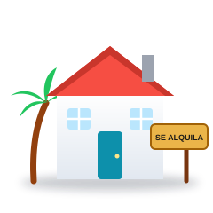
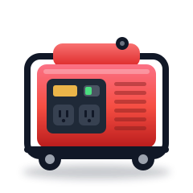
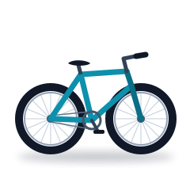
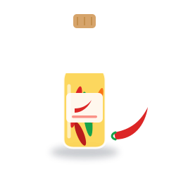
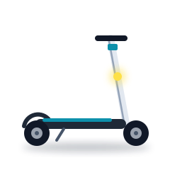

Qué hace falta para que Plaza 787 sea el Facebook Marketplace boricua: las 5 reglas de oro, la arquitectura, los costos, el equipo y el plan por fases.
Noviembre 2026 Documento de trabajo · versión 2.0



Plaza 787 es un marketplace local como el de Facebook: publicas gratis, la gente cerca de ti te escribe por chat y se encuentran en persona. El prototipo ya muestra ese flujo completo. Este documento dice qué construir para operarlo de verdad, en qué orden y cuánto cuesta.
Prototipo en Astro con 71 páginas: publicaciones con distancia en millas, chat comprador–vendedor, guardados, notificaciones, vehículos y alquileres, y el perfil verificado que diseñó la socia. Todo se guarda en el navegador.
Una plataforma real donde publicar toma segundos, lo que está cerca aparece primero, el chat funciona en tiempo real y comprar en persona es más seguro que en cualquier grupo o clasificado.
5 reglas de oro + arquitectura modular en la nube + chat en tiempo real + búsqueda por distancia + proveedores para identidad, notificaciones y moderación.
La gente ya compra y vende entre vecinos por Facebook, grupos y WhatsApp. Plaza 787 toma lo que funciona de ese modelo y le añade lo que falta: identidad verificada, encuentros seguros y cosas pensadas para Puerto Rico.
El prototipo valida la experiencia completa estilo Marketplace. Los componentes se reutilizan; la capa de datos (store.ts) se reemplaza por la API.
Cinco principios que guían cada decisión técnica y de producto, para que un marketplace local pueda crecer a toda la isla. Si una decisión rompe una regla, se discute antes de construirla.
"Nadie compra donde no confía."
Identidad verificada, chat sin dar tu número y encuentros seguros antes que cualquier otra función.
"Piezas independientes que se hablan por contratos."
Web, app y negocios usan la misma puerta; cada módulo es dueño de lo suyo.
"Diseñado para 100×, pagando solo lo que se usa."
El chat y la búsqueda por distancia aguantan de 100 a 100,000 usuarios cambiando capacidad, no código.
"Si se va la luz en la isla, Plaza 787 sigue funcionando."
Nube fuera de la isla, respaldos probados y un modo emergencia que protege a la gente.
"Lo que no se mide no mejora."
Cada decisión con datos y cada cambio con pruebas y despliegue automático.
"Nadie compra donde no confía. La confianza es lo que nos diferencia."
En los marketplaces entre personas el mayor riesgo no es técnico: son las estafas. Las más comunes son pedir un depósito por adelantado, mostrar una captura falsa de pago, alquilar propiedades que no existen y usar cuentas recién creadas.
Si en Plaza 787 la gente se siente más segura que en un grupo de Facebook, ya tenemos la razón para que se cambie.
"Piezas independientes que se hablan por contratos claros."
A principios de los 2000 Amazon decidió que cada equipo expusiera lo suyo solo a través de APIs. Eso le permitió crecer sin que los equipos se pisaran.
Para nosotros significa que la web, la app y los negocios grandes (dealers, administradores de alquileres) usan la misma puerta, y que cambiar un proveedor no obliga a reescribir el sistema.
/v1).mensaje.enviado, publicacion.creada, reporte.creado) para que otros módulos reaccionen."Diseñado para 100× desde el día 1, pagando solo lo que se usa."
En un marketplace como este, cada venta genera muchos mensajes y la portada se consulta muchas veces al día. El chat y la búsqueda por distancia son las piezas que más carga reciben.
Además hay picos (Navidad, regreso a clases, temporada de huracanes) y casi todo se usa desde el celular, con señal regular.
"Si se va la luz en la isla, Plaza 787 sigue funcionando."
Después del huracán María (2017) gran parte de la isla estuvo sin luz ni comunicaciones por semanas o meses, y los apagones siguen siendo frecuentes.
Justo en esos momentos es cuando más se compran plantas, baterías y agua entre vecinos. La plataforma tiene que seguir en pie y proteger a la gente de abusos.
"Lo que no se mide no mejora; lo que se repite, se automatiza."
Un marketplace vive de que las publicaciones reciban mensajes rápido y de que la gente vuelva. Eso se mide cada día y se mejora con experimentos.
Automatizar pruebas y despliegues permite mejorar todos los días con un equipo pequeño. El prototipo ya corre 43 pruebas automáticas.
*Registrarse, publicar, buscar cerca, enviar mensaje, reportar y marcar vendido.
Capas de arriba (personas) hacia abajo (datos). El chat usa una conexión en tiempo real aparte; los módulos se comunican por API y eventos.
mensaje.enviado publicacion.creada reporte.creadoEmpiezan todos dentro de un mismo backend (monolito modular) y se separan en servicios cuando el volumen o el equipo lo pidan.
| Módulo | Responsabilidad | Tecnología sugerida | Fase |
|---|---|---|---|
| Cuentas e identidad | Registro, sesión, MFA, perfil público, info privada cifrada, verificación de ID | Auth administrado (Clerk, Auth0 o Cognito) + KYC | 1 |
| Publicaciones | Artículos, vehículos (año, millaje) y alquileres (cuartos, baños); fotos; estados; renovar | PostgreSQL + S3/R2 + cola de imágenes | 1 |
| Búsqueda geográfica | Texto con errores y sinónimos boricuas, radio en millas, filtros, orden por cercanía | Typesense o Meilisearch (geo) → OpenSearch | 1 |
| Feed y recomendaciones | "Selecciones de hoy", cerca de ti, categorías que te interesan | Reglas → modelos de ranking | 1–3 |
| Mensajería | Chat por publicación, mensajes rápidos, leído/no leído, fotos en el chat | WebSockets administrado + PostgreSQL | 1 |
| Ofertas | Ofertas y contraofertas dentro del chat | PostgreSQL + eventos | 2 |
| Favoritos y alertas | Favoritos, "bajó de precio", búsquedas guardadas | PostgreSQL + tareas programadas | 1–2 |
| Reputación | Reviews tras un encuentro, nivel del vendedor, seguidores | PostgreSQL | 1 |
| Notificaciones | Push, SMS y email; preferencias y horarios | FCM/APNs + Twilio + SES/Resend | 1 |
| Reportes y moderación | Reportar, bloquear, revisión de fotos y textos, cola de revisión humana | Backoffice propio + moderación con IA | 1 |
| Antifraude | Cuentas nuevas, patrones de estafa en el chat, dispositivos repetidos | Reglas propias + puntuación de riesgo | 1–2 |
| Destacados y anuncios | Destacar publicaciones, planes para negocios, anuncios locales | Servicio propio + Stripe (cobro a negocios) | 2–3 |
| Analítica | Eventos de uso, tableros, experimentos | PostHog / RudderStack + BigQuery | 2 |
Una sola fuente de verdad (PostgreSQL con PostGIS para ubicaciones). Los datos personales viven aparte y cifrados; la ubicación pública siempre es aproximada.
Usuarios, publicaciones, conversaciones, reviews. Cada publicación tiene un punto en el mapa para buscar por radio.
Presencia en el chat, mensajes sin leer, sesiones y límites de uso.
Índice de publicaciones activas con ubicación. Se reconstruye desde PostgreSQL.
Originales y versiones optimizadas, revisadas por moderación antes de publicarse.
Eventos de uso anonimizados para tableros y experimentos.
Llaves de cifrado y secretos. Solo el módulo de Cuentas descifra la info privada.
usuario
perfil_publico (foto, usuario, pueblo)
info_privada (cifrada)
verificacion (estado, fecha)
seguidor · bloqueo
publicacion (tipo, precio, punto geo)
foto · categoria
detalle_vehiculo
detalle_alquiler
guardado · busqueda_guardada
conversacion (publicación, comprador, vendedor)
mensaje · lectura
oferta
encuentro_confirmado
review · reporte
notificacion · preferencia
destacado · plan_negocio
evento_dominio · auditoria
info_privada se cifra por campo con llaves del KMS y registra cada acceso. verificacion guarda solo el resultado, nunca la imagen de la ID. La ubicación pública se muestra por pueblo, nunca la dirección exacta.
El flujo central, igual que en Facebook Marketplace, con capas de seguridad en cada paso.
Foto, precio y pueblo en segundos. Moderación automática de fotos y texto.
publicacion.creada
En el feed y en búsquedas por radio. Aviso a sus seguidores.
indexada
"¿Sigue disponible?" Chat sin dar el teléfono; detector de estafas.
mensaje.enviado
Oferta y contraoferta; lugar y hora en un sitio público sugerido.
oferta.aceptada
Revisar el artículo y pagar al recibir (efectivo o ATH Móvil en persona).
encuentro.confirmado
Sale del feed; ambos se califican y crece la reputación.
publicacion.vendida
Como lo pidió el diseño del perfil: la ID se pide al principio, pero no queda registrada en el perfil. La verificación la hace un proveedor especializado.
Foto, nombre de usuario, pueblo; seguidores visibles u ocultos.
Nombre de pila, teléfono, fecha de nacimiento (18+), email. Se cifra y no se muestra.
Código de 6 dígitos. Con esto ya se puede chatear y comprar.
Foto de la ID y selfie dentro del flujo del proveedor. Obligatorio para vender.
Guardamos verificado, la fecha y la referencia del proveedor. Insignia en el perfil.
El proveedor borra o archiva según la retención mínima que permita la ley.
La ley federal INFORM Consumers Act (2023) obliga a los marketplaces a verificar a los vendedores de alto volumen (200+ ventas y $5,000+ en 12 meses). Si exige conservar una copia de la ID, va a la bóveda cifrada del proveedor, no al perfil. Validar con abogado.
Criterios: acepta licencias de PR y pasaportes, retención configurable, ≈ $1.50–$3 por verificación y SDK móvil.
En un Marketplace la gente entra a ver qué hay nuevo cerca. Que la portada cambie todos los días y que la búsqueda entienda cómo hablamos es lo que trae a la gente de vuelta.
Publicar y vender entre personas es gratis, como en Facebook. Cobramos a quien quiere más visibilidad y a los negocios.
Subir una publicación al tope de su categoría y de "cerca de ti" por unos días.
Dealers, administradores de alquileres, tiendas y artesanos con mucho inventario.
Comercios del pueblo que quieren llegar a vecinos (fase 3).
Tarjeta con Stripe (formularios del procesador, nunca tocamos números de tarjeta) y ATH Móvil Business. Suscripciones y facturas automáticas.
El IVU (11.5%) aplica a lo que Plaza 787 vende: destacados, planes y anuncios. Las ventas entre personas no pasan por la plataforma en el MVP. Validar con CPA.
Tres situaciones con reglas propias, donde una plataforma local puede hacerlo mejor que una global.
La plataforma corre fuera de la isla; lo que pasa en la isla es proteger a las personas y sus publicaciones.
| Componente | Estrategia | RPO | RTO |
|---|---|---|---|
| Web y CDN | Red global; sirve páginas en caché si cae el origen | — | minutos |
| API | 2+ zonas de disponibilidad; región de respaldo lista | — | ≤ 1 h |
| Chat | Servicio administrado multi-región; si cae, push/SMS | 0 | minutos |
| PostgreSQL | Multi-AZ + respaldo continuo + copia en otra región | ≤ 5 min | ≤ 1 h |
| Fotos | Replicación entre regiones | ≤ 15 min | ≤ 1 h |
| Búsqueda | Se reconstruye desde PostgreSQL; mientras, categorías | — | ≤ 2 h |
| Equipo | 100% remoto, accesos con MFA, guardia rotativa | — | — |
RPO: cuántos datos se podrían perder. RTO: cuánto tarda en volver el servicio.
Se activa cuando hay declaración de emergencia en PR:
Resumen orientativo para planificar. No es asesoría legal: cada punto se valida con abogado y CPA en Puerto Rico antes de lanzar.
| Tema | Qué exige o qué riesgo cubre | Cómo lo resolvemos |
|---|---|---|
| Datos personales | Confidencialidad de nombre, teléfono, fecha de nacimiento, email | Cifrado en tránsito y en reposo; cifrado por campo con KMS; acceso mínimo y auditado |
| Mensajes | Privacidad del chat y evidencia en caso de estafa | Cifrados en reposo; solo se revisan si alguien reporta; retención limitada |
| Identidad (KYC) | Saber quién vende; proteger la imagen de la ID | Proveedor certificado; la ID nunca entra al perfil ni a nuestra base de datos |
| INFORM Consumers Act | Verificar vendedores de alto volumen; canal de reporte | KYC + datos de contacto verificados; botón "Reportar" en cada publicación |
| Vivienda justa | Anuncios de alquiler sin discriminación | Reglas de moderación para alquileres y guía para arrendadores |
| Pagos | Datos de tarjeta (solo al cobrar a negocios) | Formularios del procesador (PCI SAQ A); las ventas entre personas no pasan por nosotros |
| Brechas de seguridad | Ley 111-2005 de PR y leyes federales de notificación | Plan de respuesta a incidentes, auditoría y simulacros |
| Contenido | Artículos prohibidos, estafas, propiedad intelectual | Políticas claras, moderación con IA + humana, 18+ para vender |
| Cuentas | Robo de cuentas, bots, cuentas falsas | MFA, teléfono verificado, límites, WAF, detección de bots |
| Accesibilidad | ADA / WCAG 2.1 AA | Contraste, teclado, lectores de pantalla; pruebas automáticas |
TypeScript de punta a punta (el mismo lenguaje del prototipo) y servicios administrados primero: menos personas operando servidores y más construyendo producto.
| Capa | MVP (meses 0–4) | Crecimiento (4–12) | Escala (12+) |
|---|---|---|---|
| Frontend | Astro con render en servidor + el diseño actual | + app móvil (React Native / Expo) | Equipos por área; experimentos en todo |
| Backend | Node.js + TypeScript, monolito modular | Se separan mensajería, búsqueda y notificaciones | Servicios por dominio |
| Base de datos | PostgreSQL + PostGIS administrado (Neon, Supabase o RDS) | RDS/Aurora Multi-AZ + réplicas | Aurora Global |
| Búsqueda | Typesense o Meilisearch con filtro geo | OpenSearch administrado | + modelos de ranking |
| Tiempo real | Ably, Pusher o Supabase Realtime | Igual, o WebSockets propios en AWS | Multi-región |
| Notificaciones | FCM/APNs + Twilio + Resend | + preferencias y horarios | + personalización |
| Fotos | Cloudflare R2 o S3 + CDN + moderación con IA | + cola de procesamiento | Multi-región |
| Hosting | Vercel o Cloudflare | AWS (ECS Fargate) + Cloudflare | Kubernetes en 2 regiones |
| Observabilidad | Sentry + monitoreo de disponibilidad | Grafana o Datadog + OpenTelemetry | + guardia SRE 24/7 |
| Entrega | GitHub Actions (ya en uso) | + Terraform | + entornos por cada cambio |
Las marcas son opciones de referencia, no compromisos: la regla 2 (adaptadores) permite cambiarlas.
Rangos mensuales de referencia en USD (noviembre 2026). No incluyen salarios. Se deben confirmar con cotizaciones reales.
| Partida | MVP ≤10k usuarios/mes | Crecimiento 10k–250k | Escala 250k+ |
|---|---|---|---|
| Hosting web y API | $20–80 | $300–1,500 | $4k–15k |
| Base de datos (PostGIS) | $25–100 | $500–2,000 | $5k–20k |
| Búsqueda geográfica | $30–100 | $400–1,500 | $3k–12k |
| Chat en tiempo real | $0–50 | $200–1,500 | $3k–12k |
| Caché y colas | $10–40 | $120–500 | $1.5k–6k |
| Fotos y CDN | $5–30 | $100–600 | $1k–6k |
| Push, email y SMS (base) | $20–60 | $150–800 | $1k–5k |
| Moderación con IA | $10–50 | $200–1,000 | $2k–8k |
| Observabilidad y seguridad | $0–50 | $300–1,500 | $3k–12k |
| Total aproximado | $150–550 | $2.5k–10k | $25k–90k+ |
En un marketplace entre personas, la moderación y la confianza son trabajo diario desde el primer día, no algo que se agrega después.
Cada fase termina con algo que se puede usar y medir. No se pasa a la siguiente sin cumplir sus metas.
Meta: beta con 200–300 usuarios en 2–3 pueblos.
Meta: lanzamiento en toda la isla.
Meta: el marketplace de referencia en PR.
Meta: ecosistema local propio.
Un tablero único, revisado cada semana por los socios. En un marketplace local, lo más importante es que las publicaciones reciban mensajes rápido.
El mayor reto no es técnico: es que la gente se mude de donde ya vende hoy.
| Riesgo | Impacto | Mitigación |
|---|---|---|
| Competir con Facebook Marketplace (gratis y enorme) | Alto | Diferenciarse en confianza (verificación, encuentro seguro), lo local (CESCO, alquileres verificados, sinónimos boricuas), soporte en español y cero ruido de red social |
| El huevo y la gallina: pocas publicaciones al inicio | Alto | Sembrar oferta antes del lanzamiento: dealers, administradores de alquileres, artesanos y vendedores activos de grupos; publicar en 30 segundos; enfocarse en 2–3 pueblos |
| Estafas en el chat | Alto | Regla 1: verificación, detector de estafas, avisos, límites a cuentas nuevas, reportar y bloquear |
| Moderación costosa | Medio | IA primero y humanos para los casos dudosos; límites por cuenta; reglas claras de contenido |
| Huracanes y apagones | Alto | Regla 4: nube fuera de la isla, multi-zona, modo emergencia, equipo remoto |
| Regulación (INFORM, vivienda justa, privacidad) | Medio | Abogado desde el día 1; no tocar el dinero entre personas en el MVP; políticas y reportes |
| Costos de nube y de SMS | Medio | Servicios administrados, push antes que SMS, presupuestos y alertas mensuales |
| Fuga de datos personales | Alto | Cifrado por campo, mínimo de datos, auditoría, pentest, plan de incidentes |
De prototipo a beta cerrada con vecinos reales.
Lo que publica cada módulo en el bus y quién reacciona. Así se agregan funciones sin tocar el código que ya funciona (regla 2).
| Evento | Lo publica | Quién reacciona |
|---|---|---|
| identidad.verificada | Cuentas | Publicaciones (permite vender), reputación (insignia), antifraude |
| publicacion.creada / actualizada | Publicaciones | Búsqueda (indexar), moderación, seguidores (aviso), guardados (bajó de precio) |
| publicacion.vendida / expirada | Publicaciones | Búsqueda (quitar), notificaciones (renovar), reputación (pedir review) |
| mensaje.enviado | Mensajería | Notificaciones (push/SMS), antifraude (patrones de estafa), contadores sin leer |
| oferta.hecha / aceptada | Ofertas | Mensajería (tarjeta en el chat), notificaciones, analítica |
| encuentro.confirmado | Mensajería | Reputación (habilita reviews de ambos lados), analítica |
| reporte.creado | Moderación | Cola de revisión, antifraude, ocultar si se pasa un umbral |
| usuario.bloqueado | Cuentas | Mensajería (cierra chats), búsqueda (oculta publicaciones) |
| emergencia.activada | Backoffice | Feed (esenciales), publicaciones (pausa por pueblo), precios (tope), SMS |
Reemplaza las funciones de src/scripts/store.ts del prototipo: misma forma de datos, ahora en el servidor.
Los términos técnicos de este documento, en palabras sencillas.
API: la "puerta" por la que la web, la app y otros sistemas piden o envían datos.
Tiempo real / WebSockets: conexión abierta para que los mensajes lleguen al instante.
Push: aviso que aparece en el celular aunque la app esté cerrada.
Búsqueda geográfica: encontrar publicaciones dentro de un radio en millas.
PostGIS: extensión de PostgreSQL para guardar ubicaciones y calcular distancias.
KYC: "conoce a tu cliente"; verificar que una persona es quien dice ser.
Moderación: revisar publicaciones, fotos y reportes para quitar lo prohibido o engañoso.
Destacado: pago para que una publicación aparezca más arriba por unos días.
CDN: red de servidores que entrega fotos y páginas desde el punto más cercano.
Monolito modular: un solo sistema dividido por dentro en partes independientes.
Evento de dominio: aviso de que algo pasó ("llegó un mensaje") para que otras partes reaccionen.
Zona de disponibilidad: centro de datos separado dentro de una región de la nube.
SLO: objetivo medible de calidad del servicio (ej. 99.9% disponible).
p95: el 95% de las respuestas son más rápidas que este tiempo.
RPO / RTO: datos que se podrían perder / tiempo para volver a funcionar.
Usuarios activos semanales: personas distintas que usan la app en una semana.
IVU: Impuesto sobre Ventas y Uso de Puerto Rico (11.5% en general).
CI/CD: pruebas y despliegues automáticos de cada cambio.
A/B: mostrar dos versiones a grupos distintos y medir cuál funciona mejor.
PWA: web que se instala como app y funciona con mala señal.
Confianza primero, todo es una API, escala sin reescribir, a prueba de huracanes, y medir todo.
Con estas cinco reglas, Plaza 787 puede empezar en dos o tres pueblos y crecer hasta ser el marketplace de toda la isla, sin perder lo que la hace boricua.

